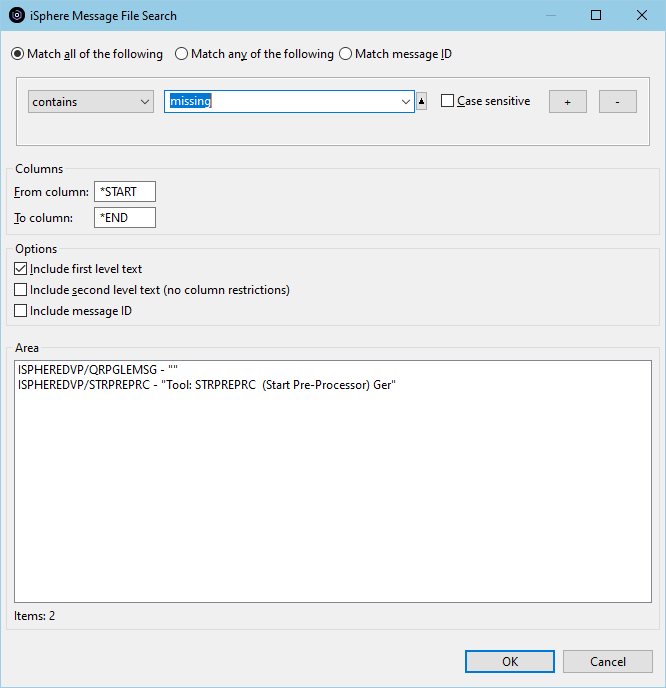
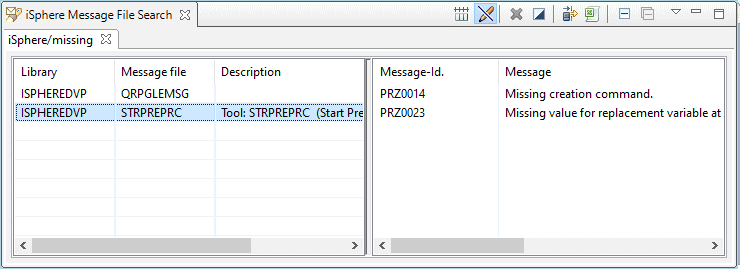
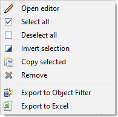
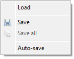
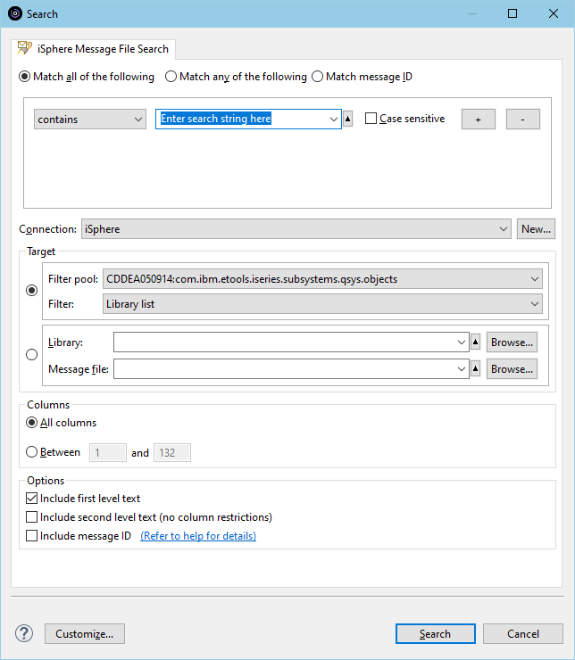

The Message File Search feature provides an extremely fast search of message files on a
server. The first time after an IPL, iSphere Message File Search may take a little longer, but you should see the improvement in subsequent runs.
The Message File Search feature provides an extremely fast search of message files on a
server. The first time after an IPL, iSphere Message File Search may take a little longer, but you should see the improvement in subsequent runs. To search message files on a server:
| Note: The "Match message ID" option can be used to search for specific
message IDs. Searching for specific message IDs is very fast, because it only
checks the message file(s) for the specified message IDs. It does not search
for a given string. Select "Match message ID" to search for one or more message IDs in one or more messages files. This option is useful, for example, when you have a message ID but no message file and you want to search all message files in library QSYS for the message ID. |

After the search finishes on the host, the "iSphere Message File Search" view appears:
In the left pane click on a message file and a preview of the message(s) containing the search string in the message filer appear in the right pane..
Double click on a message in the right pane and the Message description Change window opens.
Double click on a message file in the left pane and the Message File Editor is opened.
Right click in the left pane on a message file and the context menu appears. Select "Open editor" to open the Message File Editor.

The available menu option are:
 | - | Opens the message file editor. |
 | - | Selects all entries of the message file table. |
| - | Removes the selection for all entries of the message file table. | |
| - | Inverts the selection of the message file table. | |
 | - | Copies the selected items of the message file table to the clipboard. |
| - | Removes the selected entry from the message file table. | |
| - | Creates an object filter for the selected items of the message file frame add adds the filter to the RSE tree. | |
 | - | Exports the selected items of the message file frame to Excel. |
The additional icons at the top at of the view and their meanings are:
| - | Resets all columns to their default size. | |
| - | Starts the iSphere message description editor in browse mode when double-clicking a message description. | |
| - | Creates an object filter for the items of the message file frame add adds the filter to the RSE tree. | |
| - | Exports the content of the message file frame to Excel. |
| - | Closes the active tab. | |
| - | Closes all tabs. |
Use the view menu to save and load search results:

| Load | - | Loads search results from a given file. If the selected file contains more than one search result, the user is asked whether or not he wants to replace the existing tabs. Otherwise a new tab is added to the view. |
| Save | - | Save the selected search result to a given file. |
| Save all | - | Save the content of all search results to a given file. |
| Auto-save | - | Enabled or disables the auto-save feature. When auto-save is enabled, the content of the view is automatically save to a pre-defined file. Check the preferences page for details. |
The iSphere Message File Search can also be started from the Eclipse Search Pop-up window. Use CTRL-I,M or the "Search" menu, option "Search..." to open the iSphere Message File Search dialog.

The additional options are:
| Connection | - | Specifies the connection that is used to connect to the host. |
| Target: Filter | - | Specifies the filter whose entries are searched. |
| Target: Message file | - | Specifies the library and message file that is searched. Each item accepts *generic* strings. |
| Columns | - | Specifies the column range of the first level text that is searched for the search argument. |
| Options | - | Specifies the message text parts that are searched for the search argument. |